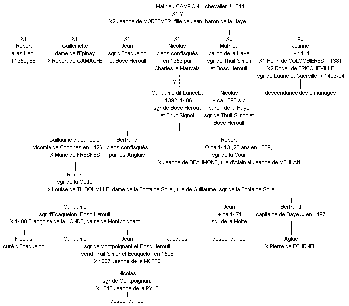

DOCUMENTS
DIVERS (2/5)
DOCUMENTS
DIVERS (2/5)
DOCUMENTS
DIVERS (2/5)
DOCUMENTS
DIVERS (2/5)
DOCUMENTS ANALYSÉS PAR DOM LENOIR
Référence : Répertoire Périodique
de Documentation Normande ; 2ème série n°1 ; 1984 ; "Abbé Ed.
Taverson : Répertoire des documents copiés ou
analysés par Dom Lenoir concernant la région de Vire et
ses principales familles 1271-1724"
Provenance : Archives Départementales de
Saint-Lô
n° 10 : 1364, 30 avril
Information de Gieffroy Morice, vicomte de Vire, sur la valeur des biens de Macé Champion, chevalier mort le 30 avril 1364. Il avait un fief entier assis à Caligny, tenu des seigneurs des "Bos Dathieu". Dans la vicomté de Vire il avait le fief du Melle assis en Montilly, et tenu de N de Saint Germain. (DL 7 p.247)
Information sur la valeur des revenus de Macé Campion. Son fils mineur Maciot Campion, est mort. Henri de Colombières hérite du chef de sa femme des fiefs de Mouen, Lasson, Calligny à Noyers, Thuit-Simer, la cour Martel. (DL 7 p.285-86)
Charles Campion, né 1370 est fils de Raoul anobli par le roi et de Guillemette de Fontaine. Il est petit-fils de Guillemette d'Anisy. (DL 7 p.29-30)
Mise hors de garde de Bertran Campion né fin décembre 1376, seigneur de Secqueville. Ce fief lui vient de Charlot Campion son frère aîné lequel "alla de vie à trépas au Pays de Hongrie" où il était allé avec Mgr de Nevers. Leur père Raoul est mort il y a 11 ans. Sont tenus de Secqueville : le fief de Corbon, par Guillaume Ruault ; le fief de Maletôt qui est à Robert Ruault, chevalier et à sa femme. Note : Charlot Campion partit il y a plus de trois ans avec Mons. de Mangueville pour le voyage de Prusse et de là ils allèrent en Hongrie. (DL 6 p.365)
Référence : Catalogue Général des
Manuscrits des Bibliothèques Publiques de France ; t. XLIV,
Caen ; 1911
Provenance : Archives Départementales de
Saint-Lô
Ms 3 n° 65
Reçu par Raoul Campion receveur des aides en Basse-Normandie de 180 l.t. par Jean Orenge, receveur des aides de Vire (Caen, 18 mai 1375)
Référence : Inventaire des sceaux de la
Normandie : recueillis dans les dépôts d'archives,
musées et collections particulières des
départements de la Seine-Inférieure, du Calvados, de
l'Eure, de la Manche et de l'Orne ; avec une introd. sur la
paléographie des sceaux... ; G. Demay ; 1881
Provenance : Bibliothèque
Nationale de France
p. 20 n°59 CAMPION (Macé) sire du Bois Heroult, chevalier - 1338
sceau rond de 29 mill. - Arch. de la Seine-Inférieure ; Archevêché de Rouen
Ecu au lion dans un quadrilobe
S MACY CHAMPION ESCUIERSentence au sujet de la seigneurie du Moulin-Jourdain à Louviers - Décembre 1338
Référence : F1191 famille de Brébeuf,
Archives Départementales du Calvados
Provenance : Patrick Van Nieuwkerke
Gilles de BREBEUF, sieur des Vages épousa Catherine TURGOT, fille de Daniel TURGOT, sr du Parc et de Catherine PORET. Ils eurent, entre autres :
Anne de BREBEUF, mariée à Jean de CAMPION, sieur de la Bougonnière.
Référence : F898 Fonds de Beaumont
Provenance : Archives Départementales du Calvados
Pleds, gage-plège et élection de prévôt de la seigneurie de la Meurdraquière, appartenant aux enfants mineurs de Claude Bonaventure, marquis de Piennes, écuyer, seigneur et patron de la Meurdraquière, instance de Marie Louise Jeanne de Collardin sa veuve, par Gabriel Vibert, avocat aux juridictions de Coutances et Cérences, sénéchal ordinaire : le curé, les héritiers du seigneur de la Granterie Campion, Deval les Fleurs, écuyer, Du Bouillon de Boisval, conseiller au présidial de Coutances, les héritiers de Charles François de Campion écuyer (1758)
Référence : 120J67
Provenance : Archives Départementales de la Manche
2 septembre 1662
Devant David Larose tabellion royal à Saint-Lô, Thomas Campion écuyer, sieur du Mesnil de Saint-Jean-des-Baisants fieffe à Jean Huet fils Guillaume dudit lieu : 4 vergées 1/2 de terre des Brulets, sis à Saint-Jean. Bornes : l'acquéreur, le Chemin de Sainte-Suzanne à l'église de Saint-Jean, Jean Le Chipey. Tenures : seigneurie du Mesnil Gonfrey
Référence : 13J333
Provenance : Archives Départementales de la Manche
Renseignements fournis par le Dr Polonovski à Paul Leportier

Référence : Inventaire analytique de la collection Danquin
100J ; Marie Christiane de la Conte ; AD Seine Maritime ; 1996
Provenance : Archives Départementales de la Manche
100 J 5 n°30
08-09-1374 Reçu par Raoul CAMPION receveur des aides en Basse Normandie de Jehan VAUCHIS, receveur en la ville et vicomté de Bayeux de 1130 l.t. sur sa recette.
100 J 5 n°31
03-10-1374 Quittance de 1980 l.t. versées par Jehan VAUCHIS receveur des aides en la ville et vicomté de Bayeux, à Raoul CAMPION receveur des aides en la Basse Normandie.
100 J 5 n°33
25-11-1374 Reçu par Raoul CAMPION, receveur des aides en Basse Normandie de Jehan VAUCHIS, receveur en la ville et vicomté de Bayeux de 400 l.t. sur sa recette.
100 J 6 n°4
20-06-1371 Reçu par Raoul CAMPION, visiteur et receveur général ès diocèses de Lisieux, Sées, Bayeux, Coutances et Avranches sur le fait des aides de la guerre de Yon HUART receveur des aides en la ville et vicomté de Caen, la somme de 2000 l.t. sur sa recette.
100 J 6 n°5
09-07-1371 Quittance de 700 fr d'or payés à Raoul CAMPION.
100 J 7 n°71
22-11-1426 Quittance de la somme de 12 l.t. payée par Guillaume CAMPION, vicomte de Conches et Breteuil à Jehan LENFANT procureur au bailliage d'Evreux, par ses gages dudit office.
100 J 26 n°41
12-11-1426 Reçu par Guillaume ALINGTON, trésorier général de Normandie de Guillaume CAMPION, vicomte d'Arques, par assignation à Raoul BOUTELIER, capitaine des châteaux de Monteux (ou Monceux) et Guilmynervis, de la ville d'Eu.
dernière modification : 27 novembre 2005